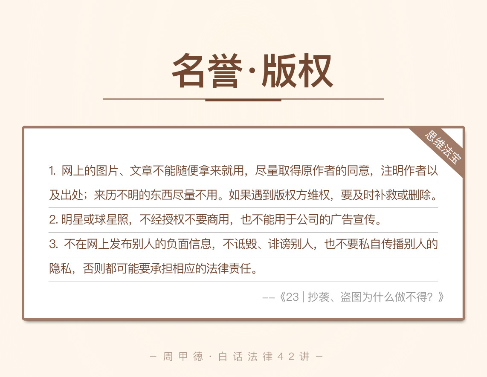

- 00 开篇词 这年头，你真应该懂点法律常识.md
- 01 “老周，我想知道” 常见法律认知盲区（一）.md
- 02 “老周，我想知道” 律师就在你身边（二）.md
- 03 “老周，我想知道” 律师就在你身边（三）.md
- 04 “老周，我想知道” 律师就在你身边（四）.md
- 05 创业未捷老板跑，社保工资哪里讨？.md
- 06 保密还是“卖身”，霸王条款怎么看？.md
- 07 编造流言蹭热度？看守所里降温度！.md
- 08 合同在手欠款难收，报警有用吗？.md
- 09 致创业：谁动了我的股权？.md
- 10 又见猝死！工“殇”究竟是不是工伤？.md
- 11 期权的“前世今生”.md
- 12 裁员面前，你能做的还有什么？.md
- 13 抄袭、盗图为什么做不得？.md
- 14 加班、工资、休假，你知道多少？.md
- 15 受贿原来这么“容易”.md
- 16 今天你用“VPN”了吗？.md
- 17 漏洞在眼前，可以悄悄破解吗？.md
- 18 “爬虫”真的合法吗？.md
- 19 非法集资到底是个啥？.md
- 20 黄色网站？不仅仅是“黄色”罪名.md
- 21 谁修改了我的积分资产？.md
- 22 外挂真能大吉大利吗？.md
- 23 如何看待“从删库到跑路”？.md
- 24 “伪基站”是你的避风港吗？.md
- 25 “网络诈骗”真的离你很远吗？.md
- 26 智斗中介：“北上广”租房图鉴.md
- 27 买买买！买房的“避坑”指南.md
- 28 闪婚又闪离，彩礼怎么理？.md
- 29 离婚还想和平？你要这么做.md
- 30 遗产继承的爱恨情仇.md
- 31 骗术升级？假结婚、假离婚的那些事儿.md
- 32 孩子学校受伤，谁之过？.md
- 33 如何让欠债还钱真正“天经地义”？.md
- 34 从透支到盗刷：人人须知的银行卡纠纷.md
- 35 远离“套路贷”的套路大全.md
- 36 危险！酒驾为什么被罚那么重？.md
- 37 老人倒地，“扶”“不服”？.md
- 38 “能动手就别吵吵”，代价你真的知道吗？.md
- 39 发生交通事故，如何处理？.md
- 40 交通事故综合法宝.md
- 41 婚姻家庭综合法宝.md
- 42 买卖房屋综合法宝.md
- 一键直达 法律专栏“食用”指南.md
- 加餐 “新冠肺炎”影响下，17个常见法律问题解答.md
- 结束语 法律，不会终止的篇章.md
13 抄袭、盗图为什么做不得？
今天呢，先给你讲一个我遇到过的真实的故事。我一高中同学老张在老家小县城开了一家瑜伽馆，日子过得也还算惬意。前几天，老张突然给我打电话，怀疑自己可能遇到了骗子，因为瑜伽馆居然收到了北京市朝阳区法院的传票，还说是明星蒋勤勤把他们给告了，要求赔偿15万。
普普通通一老百姓，又离北京十万八千里的，怎么突然就跟明星扯上关系了呢？老张自然很怀疑，所以找到了我这个律师来帮忙。
我让老张把他同时收到的文件快递给我，结果收到后一看，还真是法院寄过去的，核实了一下，还真是蒋勤勤把他们给告了。到底是怎么回事呢？
原来是老张瑜伽馆的公众号出的问题。老张在网上看到了一篇名为“蒋勤勤热爱瑜伽”的文章。这篇文章用了很多张蒋勤勤的照片，还写了蒋勤勤的幸福生活，全篇都是正面健康的信息。老张想，这不正是自己瑜伽馆做宣传需要的吗？
于是，他在公众号里转发了这篇文章，结尾处还加了一句广告“瑜伽的幸福生活，欢迎您到某某瑜伽馆来”，然后留下了自家瑜伽馆的地址和电话。
没想到就是这么一件事捅了篓子，被蒋勤勤给起诉了，还得赔15万块钱。老张听到我确认的消息后，完全慌了，这对他小小的瑜伽馆来说，可以说是天大的事了。
为什么小小的一篇文章，还是别人的文章，却带来这么严重的后果呢？老张又该怎么办呢？
这里，你就得先了解这么几个概念了。
法律知识
名誉权、肖像权
前面我们学过了商业名誉和商品声誉，主要指的是商家和商品在商业方面的好名声。今天我们要说的人的名誉，也可以类比来理解。
名誉，主要是对一个人品德、才能、声望、信誉和形象等各方面的综合评价。虽然我们在生活中可能会吐槽说，某人毫无名誉可言，但事实上，法律面前，人人都有名誉权，名誉权也是不容侵犯的一项权利。
侵害名誉权的方式主要有侮辱、诽谤、泄露他人隐私等。对于这个行为的认定，也跟我们前面学过的侵犯商业名誉、商品声誉行为类似：
主观上是有错的。不管是故意还是不应该疏忽的过失行为，都属于有错的范围。比如说，医院不小心泄漏某个患者得了艾滋病，也是有错的行为。
客观上造成了被侵犯人的名誉受损，这个结果通常也会有第三人知道。
侵犯的对象是特定的某个人。有些文学作品可能会用代号的形式影射某些人，如果观众一眼就能看出是谁，也属于“特定”的范围。
后果上，给被侵犯人造成了损害。
所以，如果有人用书面、口头或者发短信等各种方式，去侮辱别人或者诽谤造谣，损害了别人的好名声，给别人造成了损害，就会侵害到别人的名誉权。
肖像，主要是指用艺术的形式展现人的外貌形象。每个人不论男女老少、不论美丑，都享有肖像权。肖像权主要包括这三方面的内容：
每个人都有权拥有自己的肖像，以及自己肖像的制作专有权。说白了，自己可以用任意方式呈现制作自己的肖像，比如拍照、漫画等，别人只有在同意或授权的情况下，才可以制作。
每个人都拥有对自己肖像的使用专有权。同样的，自己的照片只有自己可以拿来商用或者其他处理，别人同样需要同意或授权。
每个人都拥有对自己肖像的利益维护权。所以，我们有权禁止别人非法使用自己的肖像，也有权禁止别人损害、玷污我们的肖像。
当然，在生活中，我们往往不会计较那么清楚，比如说如果你不愿拍照，别人强行偷拍或者抓拍，其实也算侵犯了肖像权，只不过朋友之间可能并无恶意，你也就不追究了。
但是，如果哪个人没有经过你的同意，为了营利的目的，而把你的照片用做商业广告、商品装潢、书刊封面及印刷挂历，这种情况下我们通常会严格追究责任，这也是最常见的一种侵犯肖像权的行为。
著作权
著作权在国外一般被叫做版权，所以这两个词并没有明确的区分。著作权是指在文学、艺术和科学领域内，具有独创性，同时可以靠某种有形形式复制的智力成果，比如说可复制的书或者唱片等。只要符合这个要求的作品，不管是否对外发表过，都享有著作权。
生活中著作权无处不在，在网上发表东西，对作者来说基本都有相应的著作权。著作权不需要申请，作品完成就会自动获得法律保护。不过目前来说，大多数人对著作权的自我保护、对侵权行为的法律认识，都还有很大的提升空间，大众还没有形成对别人著作权付费的意识。
如果你没有经过作者同意，也没有任何法律上的依据，随便使用了别人的作品，就属于侵权行为。不合理不合法使用都构成侵权。侵犯著作权的行为，可能会让你承担相应的民事赔偿，甚至犯罪入狱。
情景分析
了解了这几个概念，我们再来看老张的情况，心里应该有谱了。你可以先想想，刚刚提到的几个权利，老张的行为涉及到了吗？我们依次来看。
第一，肖像权的问题。老张显然侵犯了他人的肖像权。
瑜伽店没有经过蒋勤勤的同意或授权，私自用了她的照片，并且在文章的最后留下本店的联系方式和地址，这明显具有营利的目的，因此构成了侵权。
未经本人同意，用于商业经营，这就是我们刚刚讲到的侵害肖像权的最典型例子。老张应该及时删除文章，停止侵害，消除影响，然后向蒋勤勤赔礼道歉，并给出相应的赔偿。
第二，名誉权的问题。老张的行为，并没有侵犯名誉权。
瑜伽店转发的这篇文章，都是对蒋勤勤的正面评价，没有任何的侮辱或者诽谤；另外，文章里用的图片也都很美，并不会对其名誉造成任何不良影响，相反会使蒋勤勤的社会评价更高。所以瑜伽店没有侵犯到蒋勤勤的名誉权。
第三个，著作权的问题。别忘了，文章是老张私自转发的，可能涉嫌侵犯原作者的著作权。
公众号转发别人发表过的文章是不是侵权呢？其实不管别人发没发过，如果没经同意或者授权，转发别人的文章，都可能构成侵权。老张瑜伽店的公众号私自转发了别人的文章，从法律上来说，侵犯了原作者的信息网络传播权。
那么，公众号想发表别人的文章，怎么做才能不侵权呢？
一般有两种办法：
一种是找原作者授权同意，通常为了达到传播效果，在注明出处及作者本人信息时，原作者会同意转发的。
另一种是在公众号里，以链接的形式呈现，如果读者想阅读原文，通过链接跳转到本来的文章页面就可以了。
另外，再解释一个你可能比较关心的问题，从网上下载图片，用作公众号的封面或插图，会不会侵权呢？
我们平常上网时，看到有意思或者很美的图片，会顺手保存在手机电脑上，然后转发到朋友圈或在公众号里使用。然而，事实上，网上的图片同样有版权，使用不当很可能构成侵权，也就是我们刚刚提到的，信息网络传播权。
一般情况下，如果是我们的个人公众号或朋友圈使用，只要不涉及商业用途，著作权人不太会计较。但如果是公司的公众号发表，就很可能被图片版权方追责了。前面文章留过的一个思考题，葛优躺的例子，正是这种情况。
那么，公众号要怎么使用图片才能不侵权呢？
我觉得要做到下面这几点：
来源不明的图片尽量少用或不用；
使用之前联系图片版权方，并取得同意；
使用别人图片，要注明作者和出处；
不要在同一网站大量下载图片使用；
警惕所谓免费的“钓鱼”网站。
这里，我强调一下第五点，钓鱼网站的问题。有一些网站，号称可以“免费使用”，比如一些“字体库”、“图片库”。可是你一旦使用，对方就会进行公证保全证据，然后“碰瓷”找你要钱。所以，免费网站也要辨别慎用。
思维“法”宝
现在已经有不少公司因为这类问题，收到律师函或是法院传票，比如说某个公众号或官网私自使用了他人的字体、图片、代码或者软件等等。在没有合法授权、没有付费购买的情况下，动辄被索要几十万，版权问题也得到了更多人的关注。
我们来总结一下今天的主要内容：
网上的图片、文章不能随便拿来就用，要尽量取得原作者的同意，注明作者以及出处；来历不明的东西尽量不用。如果遇到版权方维权，要及时补救或删除。
明星或球星照，不经授权不要商用，也不能用于公司的广告宣传。否则一旦你的公司发展壮大，就可能会有人找人门来要求赔偿。
不在网上发布别人的负面信息，不诋毁、诽谤别人，也不要私自传播别人的隐私，否则都可能要承担相应的法律责任。

也许永远有人会心存侥幸，觉得那么多人都那么做也没事，自己不会那么倒霉吧？如果你这么想，说明还是停留在没有版权意识的阶段。事实上，没被追究不代表行为合法，这是两个概念。没被追究更可能是因为你暂时还不值得追究，或是原作者还没腾出时间来，这个结果是一种侥幸罢了。
对于今天的内容，你有什么想法或者疑问吗？或者你也曾有过类似的经历吗？欢迎留言和我分享，也欢迎你把这篇文章分享给你的亲人朋友。有所不为才能有所为，法律就是这个界限，希望你也能达到“心中有数，处处有路”的境界。
© 2019 - 2023 Liangliang Lee. Powered by gin and hexo-theme-book.